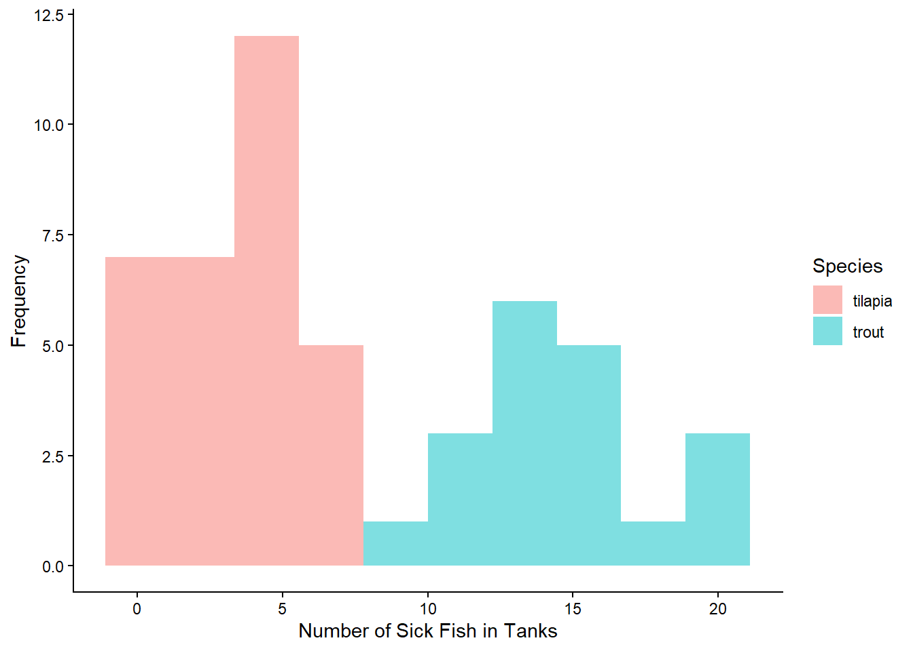
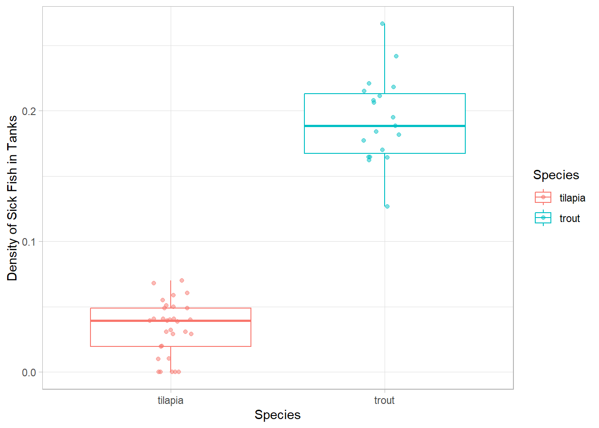
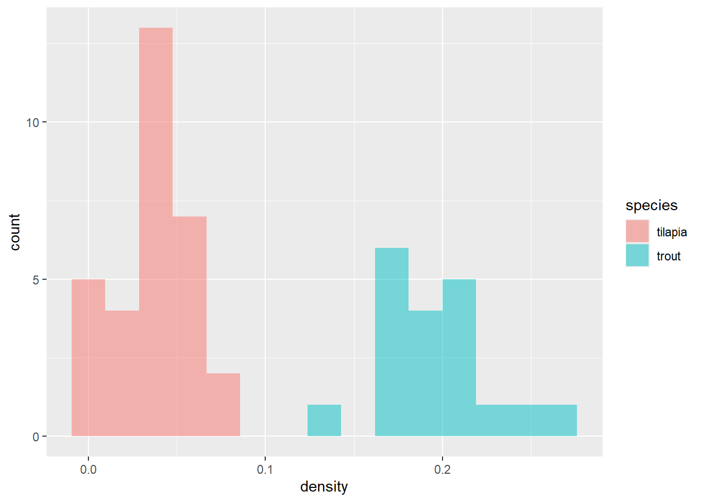
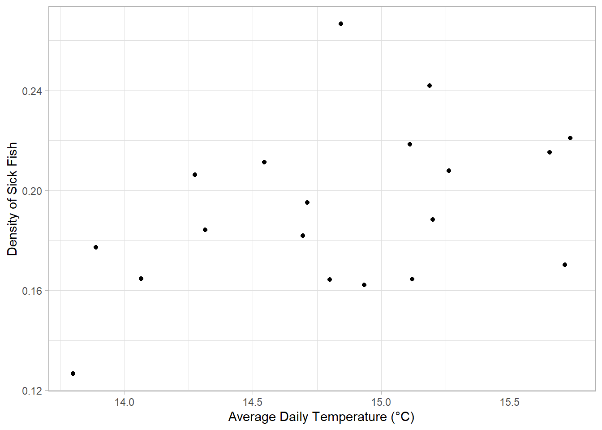
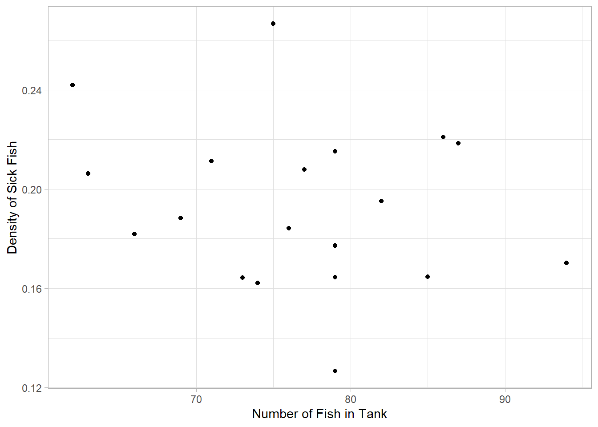
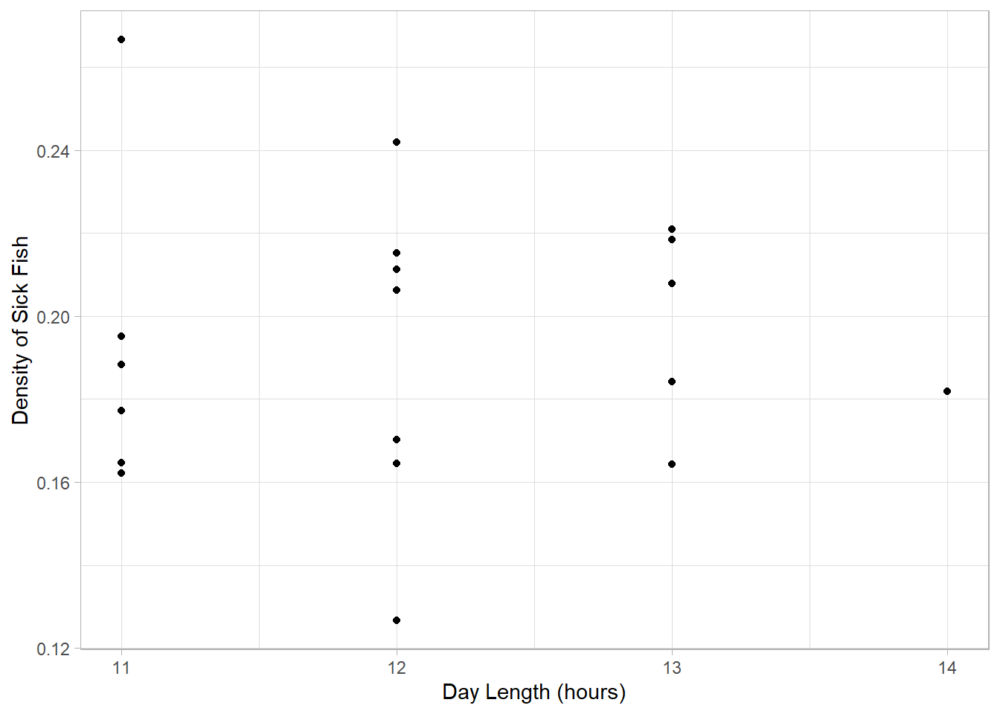
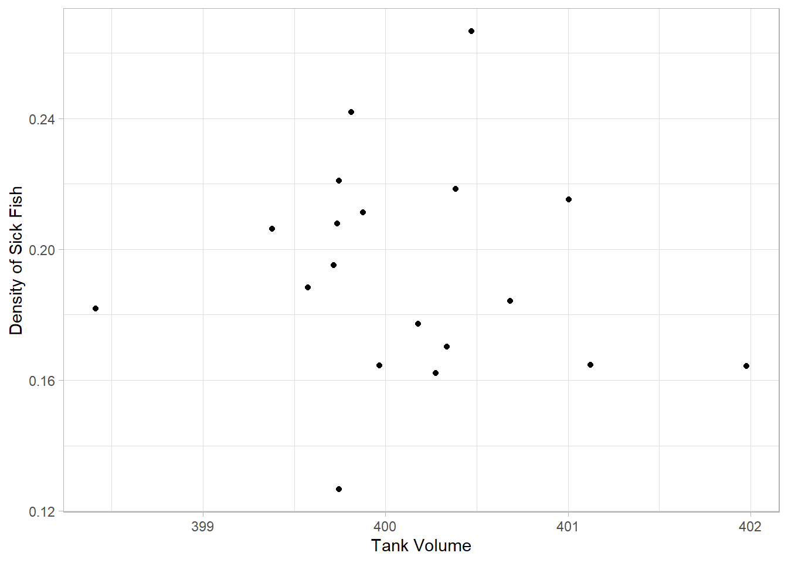

library(tidyverse)2.5: Module 2 Wrap-Up
What is causing the food poisoning?
Learning Outcomes
- Students will be able to apply descriptive statistics and data visualization skills to investigate a problem.
- Students will be able to create a new variable using
mutate(). - Students will be able to use
group_by()andsummarize()to compare groups. - Students will be able to select and interpret appropriate plot types to identify patterns across environmental variables.
At the beginning of Module 2, we set out to discover what was causing food poisoning among our colleagues at our Antarctic base. Let’s put everything we’ve learned about descriptive statistics and data visualization to use to try to hunt down what the problem is.
Set-up
Let’s load the package and data we will need.
Packages
Data
First, we need our dataset!
sick_fish <- read_csv("data/fish_sick_data.csv") Let’s check out our data and remind ourselves what we are working with.
head(sick_fish)# A tibble: 6 × 7
tank_id species avg_daily_temp num_fish day_length tank_volume num_sick
<dbl> <chr> <dbl> <dbl> <dbl> <dbl> <dbl>
1 388 tilapia 24.3 93 10 399. 3
2 425 tilapia 24.6 98 11 400. 4
3 420 tilapia 23.0 103 9 399. 2
4 819 trout 14.1 85 11 401. 14
5 176 tilapia 23.3 98 10 400. 3
6 926 trout 13.8 79 12 400. 10Which Fish?
In the previous lesson, we plotted the number of sick fish. Let’s remind ourselves what that looked like. Make a plot that compares the numbers of sick fish per species. We actually have a few options!
# Write your code hereAnswer:
ggplot(sick_fish, aes(num_sick, fill = species)) +
geom_histogram(alpha = 0.5, position = "identity", bins = 10) +
labs(x = "Number of Sick Fish in Tanks",
y = "Frequency",
fill = "Species") +
theme_classic()
Density
Wait a second! Take a look back at the data. There is a “number of fish” column, indicating the total number of fish in the tank, and it looks like those numbers can differ pretty widely.
We should probably take into account how many fish there are in the tank to begin with. 12 sick fish out of 50 is probably a bigger deal than 12 sick fish out of 100!
What we need to do is calculate a density: the number of sick fish divided by the total number of fish in the tank.
# take into account the number of fish in the tank: density of sick fish
sick_fish <- sick_fish %>%
mutate(density = num_sick/num_fish) Small Groups
Let’s make sure our conclusions about trout being the true culprits still hold when we account for the total number of fish in the tank.
Work in small groups to do the following:
- find the average number and standard deviation of sick fish for both species
- make a plot that compares the distributions of sick fish numbers for both species (you have multiple options here!)
# Write your code hereAnswer:
sick_fish %>%
group_by(species) %>%
summarize(mean_sick_fish = mean(density),
sd_sick_fish = sd(density))# A tibble: 2 × 3
species mean_sick_fish sd_sick_fish
<chr> <dbl> <dbl>
1 tilapia 0.0336 0.0207
2 trout 0.193 0.0327# boxplot option
ggplot(sick_fish, aes(species, density, color = species)) +
geom_boxplot() +
geom_jitter(alpha = 0.5, width = 0.1) +
labs(x = "Species",
y = "Density of Sick Fish in Tanks",
color = "Species") +
theme_light()
# histogram option
ggplot(sick_fish, aes(density, fill = species)) +
geom_histogram(alpha = 0.5, bins = 15)
Instructor Note: Trout have a mean sick fish density of 0.193, roughly 5.7× higher than tilapia (0.034). The boxplot makes this immediately visible.
Uh oh… the trout densities look even worse than just the number of sick fish.
We should create a data frame that only contains trout to work with for the rest of our analyses. Take a few minutes to work on that; call it sick_trout.
# Write your code hereAnswer:
sick_trout <- sick_fish %>%
filter(species == "trout")
sick_trout# A tibble: 19 × 8
tank_id species avg_daily_temp num_fish day_length tank_volume num_sick
<dbl> <chr> <dbl> <dbl> <dbl> <dbl> <dbl>
1 819 trout 14.1 85 11 401. 14
2 926 trout 13.8 79 12 400. 10
3 851 trout 15.7 79 12 401. 17
4 996 trout 15.7 86 13 400. 19
5 776 trout 15.2 69 11 400. 13
6 766 trout 15.1 79 12 400. 13
7 964 trout 14.9 74 11 400. 12
8 892 trout 15.1 87 13 400. 19
9 793 trout 14.7 82 11 400. 16
10 751 trout 14.8 75 11 400. 20
11 945 trout 14.7 66 14 398. 12
12 944 trout 15.2 62 12 400. 15
13 844 trout 15.3 77 13 400. 16
14 973 trout 15.7 94 12 400. 16
15 920 trout 14.3 63 12 399. 13
16 980 trout 13.9 79 11 400. 14
17 816 trout 14.5 71 12 400. 15
18 783 trout 14.8 73 13 402. 12
19 909 trout 14.3 76 13 401. 14
# ℹ 1 more variable: density <dbl>What Environmental Factor?
Take a look back at the data frame. Which columns are environmental variables that could be driving the issues?
Are those columns numeric or categorical? What plot type have we talked about that might help us find a relationship between density and each of these variables (one at a time…)?
Instructor Note: The environmental columns in the trout data are avg_daily_temp, num_fish, day_length, and tank_volume.
All are numeric, so scatter plots with density on the y-axis are the right choice.
In small groups, make plots using the density column in the sick_trout data to try to figure out which environmental factor is causing problems in the trout. Make one plot per variable so you can look at each relationship on its own.
# Write your code hereAnswer:
ggplot(sick_trout, aes(x = avg_daily_temp, y = density)) +
geom_point() +
labs(x = "Average Daily Temperature (°C)", y = "Density of Sick Fish") +
theme_light()
ggplot(sick_trout, aes(x = num_fish, y = density)) +
geom_point() +
labs(x = "Number of Fish in Tank", y = "Density of Sick Fish") +
theme_light()
ggplot(sick_trout, aes(x = day_length, y = density)) +
geom_point() +
labs(x = "Day Length (hours)", y = "Density of Sick Fish") +
theme_light()
ggplot(sick_trout, aes(x = tank_volume, y = density)) +
geom_point() +
labs(x = "Tank Volume", y = "Density of Sick Fish") +
theme_light()
What do we think is the environmental driver causing issues with the trout?
Instructor Note: This is a discussion question, so keep it open and let students reason from their plots. Use the points below to guide the conversation rather than handing over the answer.
avg_daily_temp shows a positive relationship between temperature and sick fish density. As temperature goes up, density tends to go up. This makes biological sense, since rainbow trout are cold-water fish and even modest warming toward the upper end of their tolerance range stresses their immune function.
num_fish shows a slight negative trend: as the number of fish in a tank goes up, density drops a little. This is most likely a dilution effect in the density calculation (more total fish in the denominator) rather than a real biological pattern, and the scatter is wide.
day_length shows essentially no relationship
tank_volume is nearly constant across the trout tanks (everything sits right around 400). There is no variation to drive anything, which means we can rule it out as a cause.
Temperature is the primary driver.
Students haven’t learned how to fit a trend line yet, but if you want to make the pattern more obvious you can add geom_smooth(method = "lm") to the temperature plot as a preview of the regression work coming in Module 3. Close by asking what they would recommend to the Antarctic base team, which sets up that transition.